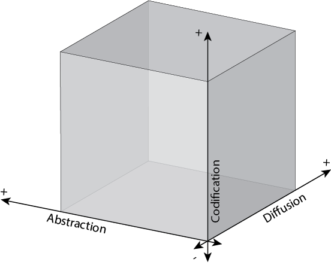
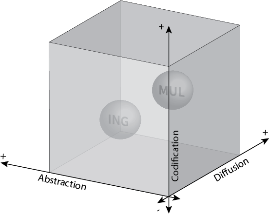

![]()
Un pilar fundamental sobre el que se sostiene mi cosmovisión es el esquema conceptual I-Space (Boisot 1998). Es muy complejo y los invito a explorarlo de primera mano porque el autor aborda la complejidad socio-económicos en términos informacionales como nadie. Su análisis de la economía del conocimiento y su explicación del cambio tecnológico son excelentes. Lamentablemente es un autor prácticamente desconocido en la literatura económica.
Yo sólo voy a introducir algunos de sus elementos básicos. Su marco teórico se llama I-Space o Information Space, justamente porque permite representar flujos y activos de información en un espacio de tres dimensiones. Estas tres dimensiones son los grados de codificación, abstracción y difusión. Al ser evaluadas en grados, al interior de cada dimensión la información se representa en términos relativos.

La codificación representa la división en categorías, como conceptualizar ideas o guardar cosas en lugares específicos (ej. ordenar tu ropa en cajones según su tipo). Boisot (1998, 42-47) lo define como el costo de procesamiento de datos que implica distinguir y categorizar cosas o hechos. Lógicamente, codificar es más difícil cuando la cantidad de datos a procesar es mayor. Es decir, cuantas más cosas se tengan en cuenta, más difícil se hace clasificar algo. Una buena manera de entenderlo para mi es pensar en clasificaciones diferentes para una misma cosa, como los indicadores de pobreza. Es más fácil definir un hogar como pobre mediante una sola variable (umbral de ingresos) que mediante varias (pobreza multidimensional).
La abstracción refiere justamente al número de categorías necesarias para clasificar algo. Clasificaciones basadas en menos categorías son abstractas que aquellas que requieran más. Volviendo al ejemplo anterior, etiquetar un hogar como pobre en base a ingresos se puede considerar más abstracto que hacerlo mediante criterios múltiples1. En términos de Boisot (Boisot 1998, ibid), la abstracción permite ahorros adicionales en los costos de procesamiento de información ya que genera asociaciones entre categorías (ingreso-pobreza).
Por último aparece la difusión, que retrata el acceso a la información dentro de una determinada población. La difusión entendida de esta manera depende de varios factores. En parte, está influenciada por los grados de abstracción y codificación, ya que clasificaciones más abstractas reducen el costo de transmitir de información. Continuando nuestro ejemplo de asociar pobreza con ingresos, si ambos indicadores fuesen igual de eficaces en representar la pobreza, sería más fácil difundir la clasificación de un hogar pobre según sus ingresos que ir a revisar las condiciones materiales concretas que tiene para determinar si es pobre o no ). Otros factores factores decisivos en el grado de difusión son las tecnologías de comunicación y los codebooks o marcos interpretativos, ya que afectan la facilidad con la cual podemos transmitir información y desarrollar la capacidad de interpretarla correctamente.
Utilizar estas tres dimensiones nos permite representar espacialmente, y en términos relativos, cualquier tipo de información. Siguiendo con nuestra comparación de indicadores de pobreza, podríamos representarlos de la siguiente manera en el I-Space:

Vemos el indicador por ingresos (ING) más abajo, a la izquierda y al fondo de la figura. En cambio, el indicador multidimensional (MUL) ofrece una alternativa informacional menos abstracta y difundida pero más codificada, ubicándose por tanto en zonas más elevadas y hacia adelante. Así como, de forma ilustrativa, podemos comparar indicadores de pobreza, el I-Space nos permite ilustrar y comparar todo tipo de objetos informacionales.
A su vez, la comparación y el análisis de estos objetos puede permite pensar, por ejemplo, alternativas estratégicas de comunicación o acción. Para mi es particularmente interesante el uso de I-Space en entornos sociales, ya que permite representar agentes, su conocimiento, su aprendizaje y la evolución de su comportamiento.
Pero para ello, además del I-Space, es necesario: 1) demarcar información de datos y conocimiento; 2) incorporar otros conceptos de Boisot relacionado al conocimiento en entornos sociales.
Referencias
Notas
- ↩︎
Utilizo el condicional aquí porque es fundamental considerar también la eficacia que las categorías tienen para representar aquello que dicen representar. Más allá de la idea de pobreza que tengamos, una persona con infinitas propiedades y ahorros pero con cero ingresos no pertenece al universo de los pobres. Por otro lado, sí podemos asociar una persona que cumplen con los criterios de pobreza multidimencional, como tener acceso a agua potable o electricidad.
Cómo citar
@online{hulskamp2023,
author = {Hulskamp, Ian},
title = {El I-Space “Framework”},
date = {2023-10-27},
url = {https://ihulsk.github.io/posts/20231027-ispaceBasics/},
langid = {es}
}